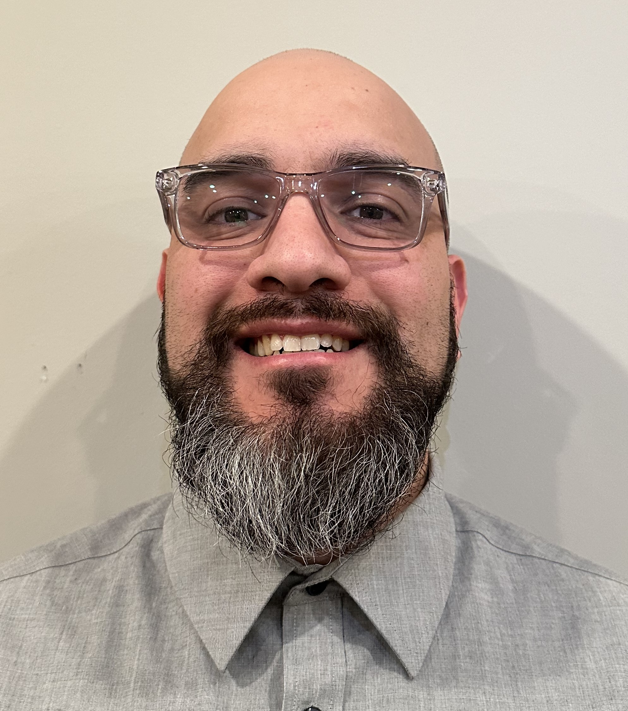

Jason Graves

I am a Senior Service Desk Analyst with multiple years of experience. I am looking to expand in programing and
web development.
Education
- Associate's degree in Arts & Sciences from Century College
- Comptia A+ certified
- Incident Response Lifecycle from Cybray
- CompTIA Network+ from Cybray
- CompTIA A+ 220-1101 from Cybray
- Linux Fundamentals for Security Practitioners from Cybray
Work Experience
- Senior Service Desk Analyst - United States Postal Service, Eagan MN 2019 to Present
- Delegate and triage support for Mobile, desktop, and security troubleshooting and escalation.
- Provide direct services and technological guidance to a wide range of users.
- Flag and offer edits for Knowledge Articles.
- Service Desk Analyst - HealthPartners, Minneapolis, MN, 2015–2019
- Identify technology issues, research, isolate, resolve, and follow-up.
- Answer, evaluate, and prioritize incoming calls, voicemails, e-mails, and system requests for assistance
from users experiencing problems with hardware, software, networking, PC, Laptop, display, Mobile
devices, and other computer related technologies.
- Coss-train to delegate Epic team inquires.
- Sales and Repair Representative - Sprint, Woodbury, MN, 2009 – 2013
- Provided structural and software repairs on mobile devices including: laptops, tablets, Wi-Fi emitting
devices, Bluetooth products and cell phones.
- Educated and assisted customers in device selection.
- Surpassed quota in sales and new lines on a regular basis.
Skills
- Platforms and Operating Systems: Apple Yosemite, Linux, Windows XP, Vista, 7 and Windows 8.1, 10
- Networking: LAN/WAN, TCP/IP, VPN
- Ethernet Cabling: crossover, patch, and loopback cables, jacks, punch down blocks
- Tools: ServiceNow Ticketing system
Other